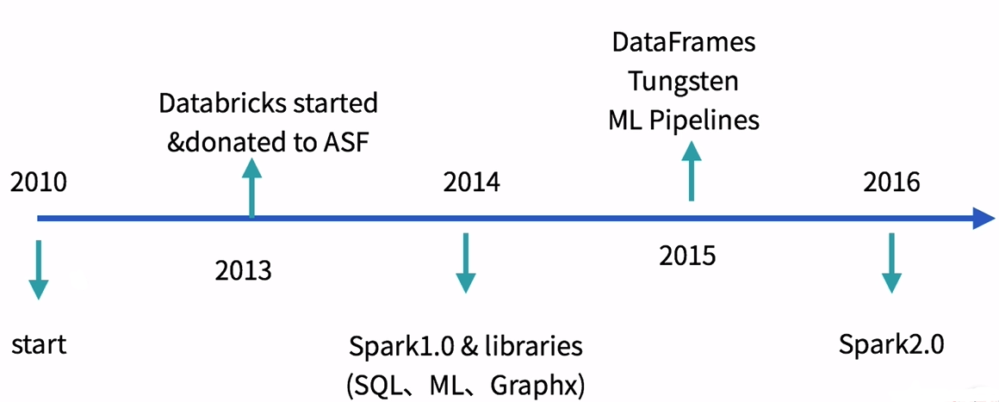
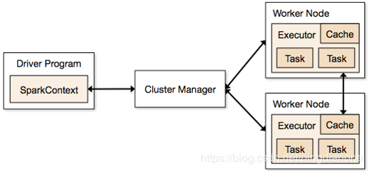

Spark概述及特点
Apache Spark™是一个统一的分析引擎进行大规模数据处理
- 快速
更快地运行工作负载100倍。
Apache Spark使用最先进的DAG调度器、查询优化器和物理执行引擎，实现了批处理和流数据的高性能。 - 易用
用Java、Scala、Python、R和SQL快速编写应用程序。
Spark提供了超过80个高级操作符，使得构建并行应用程序变得容易。可以在Scala、Python、R和SQL shell中交互式地使用它。 - 通用
结合SQL、流和复杂分析。
Spark支持一系列库，包括SQL和DataFrames、用于机器学习的MLlib、GraphX和Spark流。您可以在同一个应用程序中无缝地组合这些库。 - 到处运行
Spark运行在Hadoop、Apache Mesos、Kubernetes、独立或云中。它可以访问不同的数据源。
您可以使用Spark的独立集群模式在EC2上、Hadoop YARN上、Mesos上或Kubernetes上运行。访问HDFS、Alluxio、Apache Cassandra、Apache HBase、Apache Hive和其他数百个数据源中的数据。Spark产生背景
MapReduce的局限性： - 代码繁琐；
- 只能够支持map和reduce方法；
- 执行效率低下；
- 不适合迭代多次、交互式、流式的处理；
框架多样化：
- 批处理（离线）：MapReduce、Hive、Pig
- 流式处理（实时）： Storm、JStorm
- 交互式计算：Impala
Spark发展历史

Spark官网详细历史：
http://spark.apache.org/news/index.html
Spark术语
Spark框架图如下：

Application：用户编写的应用程序，用户自定义的Spark程序，用户提交后，Spark为App分配资源将程序转换并执行。
Driver Program：运行Application的main()函数并且创建SparkContext。
SparkContext:是用户逻辑与Spark集群主要的交互接口，它会和Cluster Manager进行交互，进行资源的申请，任务的分配与监控，SparkContext代表Driver。
Worker Node：从节点，集群中可以运行应用程序的节点,负责控制计算节点，启动Executor或Driver。在YARN模式中为NodeManager，负责计算节点的控制。
Executor：执行器，是为某Application运行在worker node上的一个进程，负责执行task，该进程里面会通过线程池的方式负责运行任务，并负责将数据存在内存或者磁盘上。每个Application拥有独立的一executors。
RDD DAG：当RDD遇到Action算子，将之前的所有算子形成一个有向无环图（DAG）。再在Spark中转化为Job，提交到集群进行执行。一个App可以包含多个Job。
Task：被Executor执行的工作单元，是运行Application最小的单位，多个task组合成一个stage，Task的调度和管理由TaskScheduler负责，一个分区对应一个Task，Task执行RDD中对应Stage中所包含的算子。Task被封装好后放入Executor的线程池中执行。
Job：一个job包含多个RDD及作用于相应RDD上的各种Operation。每执行一个action算子（foreach, count, collect, take, saveAsTextFile）就会生成一个 job。包含多个Task组成的并行计算。
Stage：每个Job的Task被拆分成很多组Task, 每组Task作为一个TaskSet，命名为Stage。一个作业job分为多个阶段stages（shuffle，串行），一个stage包含一系列的tasks（并行）。Stage的调度和划分由DAGScheduler负责。Stage又分为Shuffle Map Stage和Result Stage两种。Stage的边界就在发生Shuffle的地方。
RDD：Spark的基本数据操作抽象，可以通过一系列算子进行操作。RDD是Spark最核心的东西，可以被分区、被序列化、不可变、有容错机制，并且能并行操作的数据集合。存储级别可以是内存，也可以是磁盘。
DAG Scheduler：根据Job构建基于Stage的DAG（有向无环任务图），实现将Spark作业分解成一到多个Stage，每个Stage根据RDD的Partition个数决定Task的个数，然后生成相应的Task set放到TaskScheduler中，并提交Stage给TaskScheduler。
TaskScheduler：将Task分发给Executor执行，并维护Task的运行状态。将Stage提交Worker（集群）运行，每个Executor运行什么在此分配。
SparkEnv：线程级别的上下文，存储运行时的重要组件的引用。
共享变量：Application在整个运行过程中，可能需要一些变量在每个Task中都使用，共享变量用于实现该目的。Spark有两种共享变量：一种缓存到各个节点的广播变量；一种只支持加法操作，实现求和的累加变量。
宽依赖：或称为ShuffleDependency, 宽依赖需要计算好所有父RDD对应分区的数据，然后在节点之间进行Shuffle。
窄依赖：或称为NarrowDependency，指某个RDD，其分区partition x最多被其子RDD的一个分区partion y依赖。窄依赖都是Map任务，不需要发生shuffle。因此，窄依赖的Task一般都会被合成在一起，构成一个Stage。